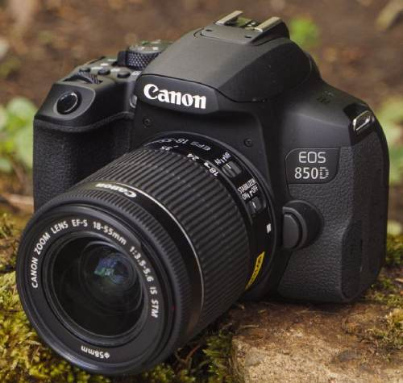

sejarah kamera!
sejarah kamera, Sejarah kamera ChatGPT Kamera telah mengalami perkembangan yang signifikan sepanjang sejarah. Awalnya, kamera obscura digunakan untuk proyeksi gambar pada permukaan datar pada zaman Yunani kuno. Pada abad ke-19, penemuan fotografi oleh Louis Daguerre dan William Henry Fox Talbot membawa revolusi dalam dunia fotografi. Kamera film pertama, Kodak, diperkenalkan oleh George Eastman pada tahun 1888, membuat fotografi lebih mudah diakses oleh masyarakat umum. Pada abad ke-20, perkembangan teknologi membawa kemajuan besar dengan kamera digital. Kamera digital memungkinkan penyimpanan gambar elektronik tanpa perlu menggunakan film. Sejak itu, kamera pada ponsel pintar juga menjadi umum, memungkinkan pengguna untuk dengan mudah mengabadikan momen sehari-hari. Perkembangan terus berlanjut dengan inovasi seperti kamera mirrorless dan teknologi fotografi terbaru.